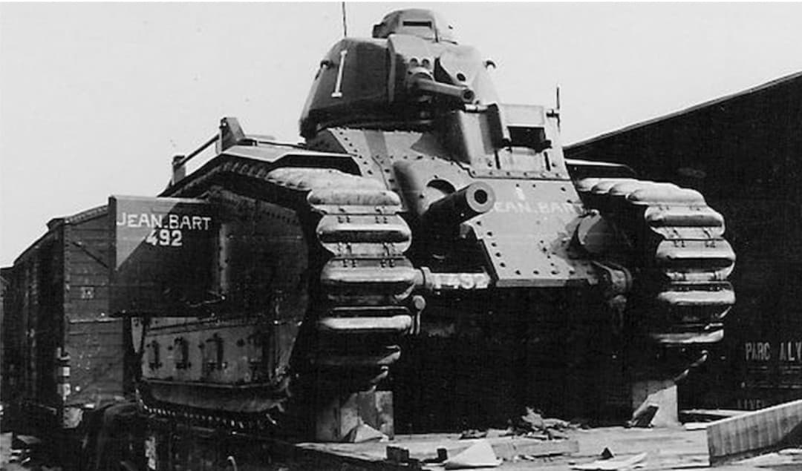
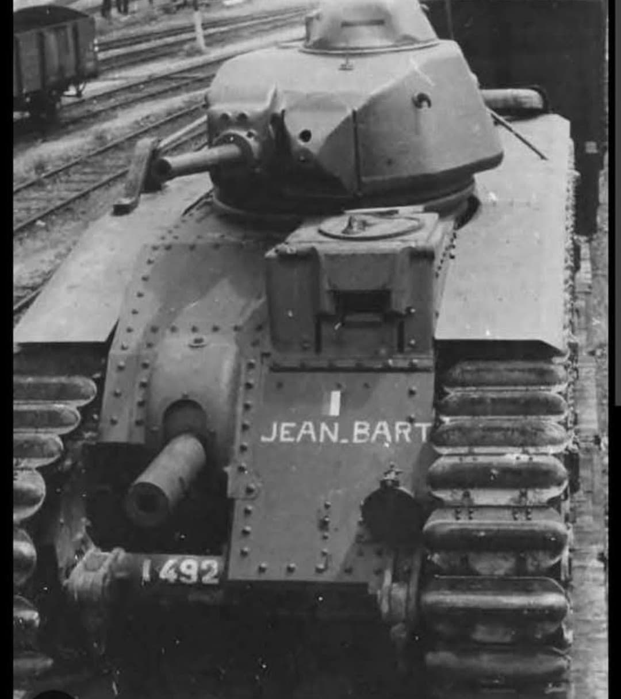
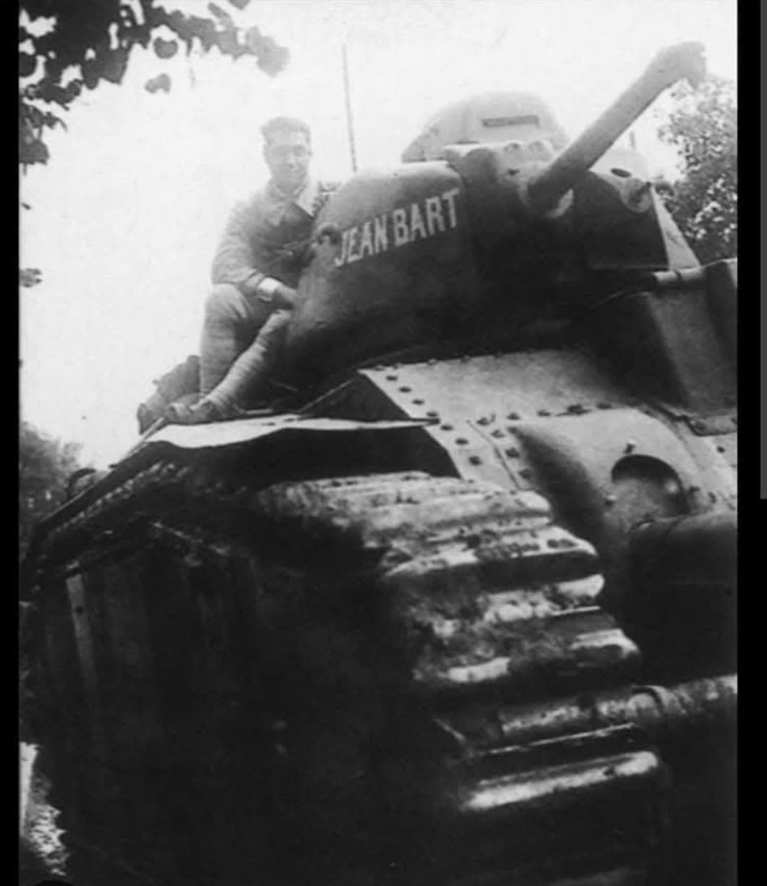
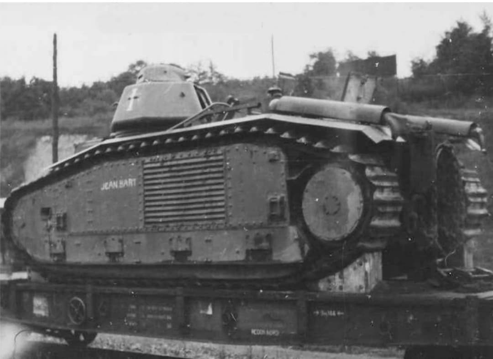
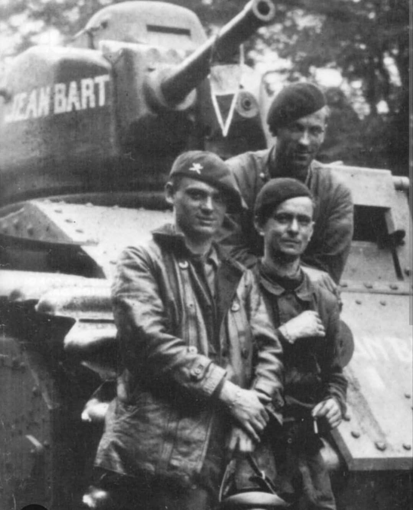
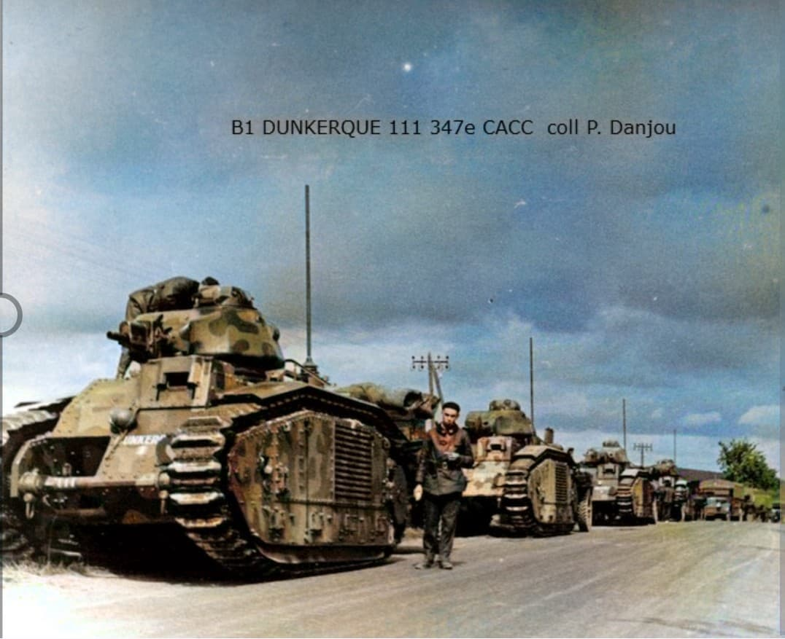
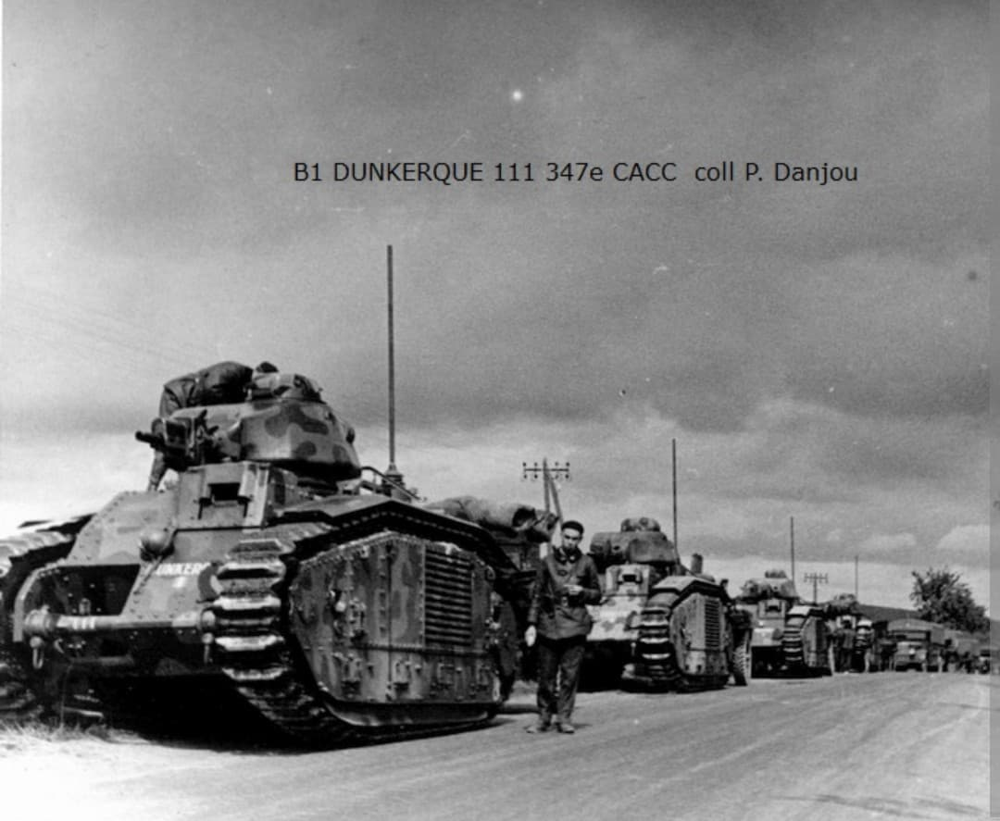
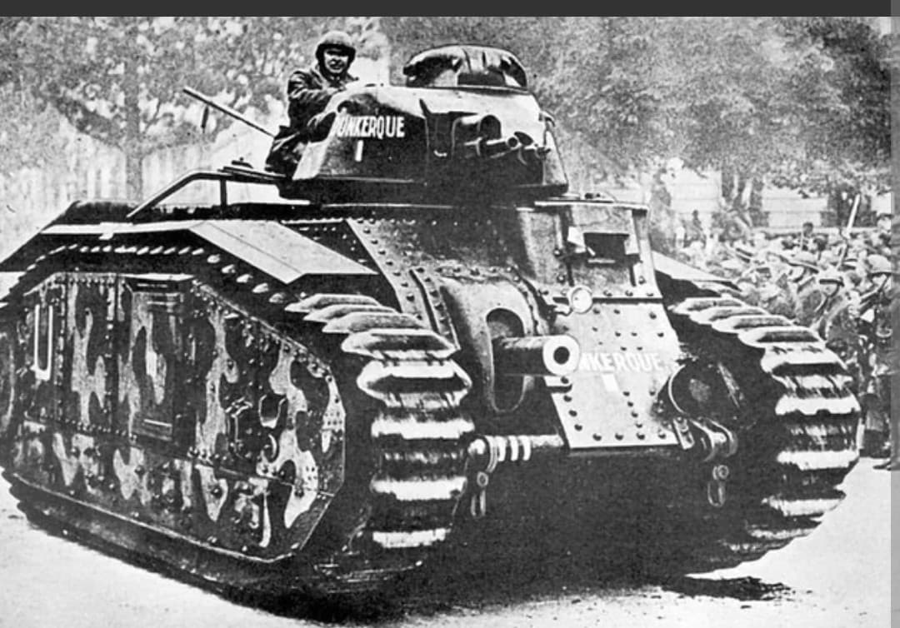

Introduction
Le char B1 Bis « Jean‑Bart » n°492 est un char lourd français engagé durant la campagne de France en 1940, au sein de la 2e compagnie du 28e Bataillon de Chars de Combat (28e BCC).
Baptisé en hommage au corsaire dunkerquois Jean Bart, ce char est un véhicule réel, documenté, qui a participé aux combats les plus violents de mai–juin 1940, avant d’être perdu lors du repli.

Identification
- Modèle : Char B1 Bis
- Nom : « Jean‑Bart »
- Numéro : 492
- Unité : 28e BCC – 2e compagnie
- Pays : France
- Période : Campagne de France, mai–juin 1940
- Type : Char lourd / char de rupture
Caractéristiques techniques du B1 Bis
- Blindage : jusqu’à 60 mm
- Armement principal : canon de 75 mm en casemate
- Armement secondaire : canon de 47 mm en tourelle SA35
- Mitrailleuses : 2 Reibel de 7,5 mm
- Poids : environ 32 tonnes
- Moteur : 300 ch
- Équipage : 4 hommes
- Rôle : char de rupture, percée des lignes ennemies

Équipage du Jean‑Bart n°492
- Chef de char : Lieutenant Jacques Manonvilliers
- Pilote : Sergent Pierre Gaulart
- Aide‑pilote : Caporal‑chef Baduel
- Radio : Sergent Le Bonder
Cet équipage est formellement identifié dans les archives françaises, ce qui renforce la valeur historique du char.

Parcours historique
Affecté à la 2e compagnie du 28e BCC, le Jean‑Bart est intégré à la 1ère Division Cuirassée (1ère DCR). Il est engagé en Belgique dès la mi‑mai 1940, subissant bombardements et déplacements sous pression.
Le 15 mai 1940, le 28e BCC participe à la bataille de Flavion, affrontant les chars de la 7e Panzerdivision de Rommel. Les B1 Bis infligent de lourdes pertes aux Panzer, mais souffrent du manque de carburant, de munitions et de soutien aérien. Le bataillon est pratiquement anéanti en quatorze jours.
Le 7 juin 1940, le Jean‑Bart, en panne, est remorqué vers la forêt de Halatte. Le 8 juin, il est embarqué à Chantilly à destination d’un parc d’engins blindés. Il est ensuite capturé ou ferraillé par les forces allemandes et ne survit pas à la campagne.


Valeur historique
Le Jean‑Bart n°492 est un symbole fort de la résistance française en 1940 : char lourd moderne, équipage identifié, combats violents, et fin tragique dans le chaos de la campagne.
Son camouflage grisremarquable, notamment pour un musée consacré à la Seconde Guerre mondiale et à l’histoire de la région de Dunkerque.

Le Char B1 « Dunkerque » n°111
Un autre char français porte un nom lié à ta ville : le Char B1 « Dunkerque » n°111, affecté à la 347e Compagnie Autonome de Chars de Combat (347e CACC).
- Modèle : Char B1 (version antérieure au B1 Bis)
- Nom : « Dunkerque »
- Numéro : 111
- Unité : 347e CACC
- Armement : 75 mm en casemate, 47 mm en tourelle APX1, 2 mitrailleuses Reibel
- Équipage : 4 hommes
Le B1 « Dunkerque » a combattu en 1940 et, comme la majorité des chars de sa catégorie, a été détruit, abandonné ou capturé durant la campagne. Il est moins documenté que le Jean‑Bart, mais reste un véhicule historiquement important pour la mémoire de la région.


